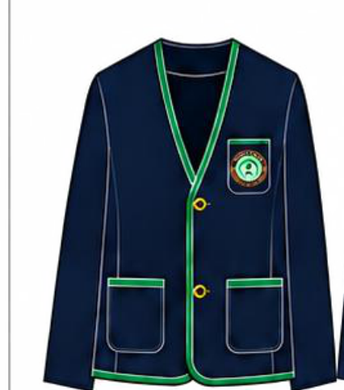
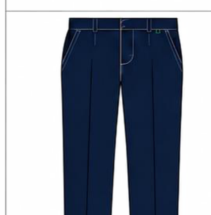

한신
HANSIN ELEMENTARY SCHOOL
실시간 교복 체험
카메라 앞에 서서 교복을 골라 보세요. 얼굴은 그대로, 교복은 움직임에 맞춰 화면에 나타납니다. AI 서버 전송 없이 무료로 작동합니다.
📷
카메라를 시작해 주세요스마트폰 또는 노트북 카메라를 사용합니다.
가능하면 전신이 보이게 서 주세요.
카메라 대기 중 · HTTPS 접속이 필요합니다.
교복 선택
종류
하의 형태
교복 미리보기
2027 교복 디자인 사양서 기준


춘추복 · 바지형2027 교복 디자인 사양서 기준
교복 크기 미세 조절100%
• 어깨와 골반 위치를 추적해 교복 이미지를 자동 배치합니다.
• 팔·다리를 실제 천처럼 변형하지 않는 AR 겹쳐보기입니다.
• 체육복의 치마형은 PDF에 없어 반바지형으로 표시됩니다.
• 촬영 영상은 기기 안에서만 처리하며 서버로 전송하지 않습니다.